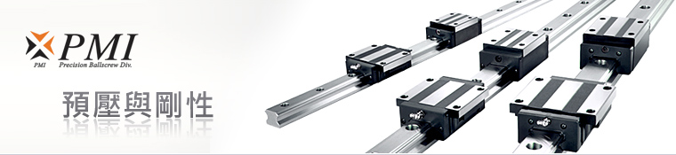
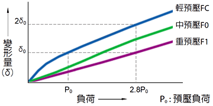

滾珠螺桿系列
轉造級滾珠螺桿
滾珠螺桿庫存區
線性滑軌系列
KM
線性模組系列
滾珠螺桿支撐座
高荷重螺桿支撐座
馬達傳動座
聯軸器
精密鎖定螺帽
利茗減速機
直線軸承
LMC
單軸心式滑軌
LGD
雙軸心式滑軌
線性滑軌預壓與剛性
Linear Guideway Preloading
滑軌安裝方式
預壓與剛性
精度標準等級


線性滑軌可以藉由施加預壓來提高剛性、如左圖所示。
預壓的效果可保持外部負荷增大到預壓負荷的 2.8 倍，即提高 2.8 倍的剛性值。
而預壓是利用增加滾動體的直徑，使滾動體與滾動面之間產生負向間隙，預先施于內部負荷，所以在進行壽命計算時，必須將其預壓負荷考慮進去。
預壓等級的選用
線性滑軌的使用，應根據不同的使用條件來選擇最合適的預壓等級，選用的基準請參照下表。
預壓等級
適用條件
應用例
輕預壓
FC
負荷方向一定，振動、衝擊力小，2軸並列使用的裝置。
精度要求不高，但要求滑動阻力小的設備。
射束銲接機械、裝訂機械、自動包裝機、一般工業機械的 XY 軸、自動門窗加工機、銲接機、熔斷機、工具交換裝置、各種材料供給裝置、數控雕銑機、輕型數控銑床。
中預壓
F0
有懸臂負荷或力矩作用的裝置。
單軸使用的設備。
輕負荷且要求高精度的設備。
磨床工作台進給軸、自動塗裝機、工業用機器人、各種高速材料供給裝置、NC 車床、一般工業機械的Z軸、印刷線路板的打孔機、電火花加工機、測定器、精密 XY 平台。
重預壓
F1
要求高剛性，且振動、衝擊力大的設備。
高負荷、重切削的機床等。
機械加工中心、NC 車床、磨床的砂輪進給軸、銑床、立式或橫式鏜床、刀具導向部、工作機械的 Z 軸。
超重預壓
F2
要求更高剛性，且振動、衝擊力大的設備。
超高負荷、超重切削的機床等。
機械加工中心、NC 車床、磨床的砂輪進給軸、銑床、立式或橫式鏜床、刀具導向部、工作機械的 Z 軸。
各型號適用預壓等級
各系列之預壓等級如下表所示，其中預壓力大小為基本額定動負荷 (
C
) 的百分比，
基本額定動負荷 (
C
) 請參閱各系列規格表。
預壓等級
預壓力(N)
MSA
MSB
MSR
MSC
SME
SMR
輕預壓
FC
0.02C
中預壓
F0
0.05C
重預壓
F1
0.08C
超重預壓
F2
0.13C
返回首頁
|
產品介紹
|
滾珠螺桿
|
線性滑軌
|
線性模組
|
聯軸器
|
檔案下載
|
聯絡我們
Copyright
© 2018
HONG YI PRECISION CO.,LTD.
鴻翊精密股份有限公司
TEL: 04-2426 5828 FAX: 04-2425 9082
台中市北屯區環中路一段1702-3號